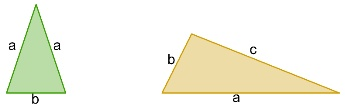
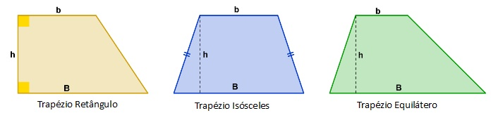

Para calcular o perímetro de um retângulo irregular, deve-se somar os seus lados. Ambos devem possuir a mesma unidade de medida.
Como o cálculo da área é feito?
Para calcular a área de um retângulo irregular, deve-se multiplicar o valor da base com o valor da altura. Ambos devem possuir a mesma unidade de medida.
Triângulo

Como o cálculo do perímetro é feito?
Para calcular o perímetro de um triângulo irregular, deve-se somar os seus lados. Ambos devem possuir a mesma unidade de medida.
Como o cálculo da área é feito?
Para calcular a área de um triângulo irregular, deve-se multiplicar o valor da base com o valor da altura e dividir por 2 (dois). Ambos devem possuir a mesma unidade de medida.
Trapézio

Como o cálculo do perímetro é feito?
Para calcular o perímetro de um trapézio irregular, deve-se somar os seus lados. Ambos devem possuir a mesma unidade de medida.
Como o cálculo da área é feito?
Para calcular a área de um trapézio irregular, deve-se multiplicar o valor da altura e multiplicá-lo com a soma das bases e em seguida dividir o resultado por 2 (dois). Ambos devem possuir a mesma unidade de medida.
Paralelogramo
Como o cálculo do perímetro é feito?
Para calcular o perímetro de um paralelogramo irregular, deve-se somar os seus lados. Ambos devem possuir a mesma unidade de medida.
Como o cálculo da área é feito?
Para calcular a área de um paralelogramo irregular, deve-se multiplicar o valor da base com o valor da altura. Ambos devem possuir a mesma unidade de medida.
Losango
Como o cálculo do perímetro é feito?
Para calcular o perímetro de um Losango irregular, deve-se somar os seus lados. Ambos devem possuir a mesma unidade de medida.
Como o cálculo da área é feito?
Para calcular a área de um losango irregular, deve-se multiplicar a diagonal maior com a diagonal menor e o resultado dividir por 2(dois). Ambos devem possuir a mesma unidade de medida.